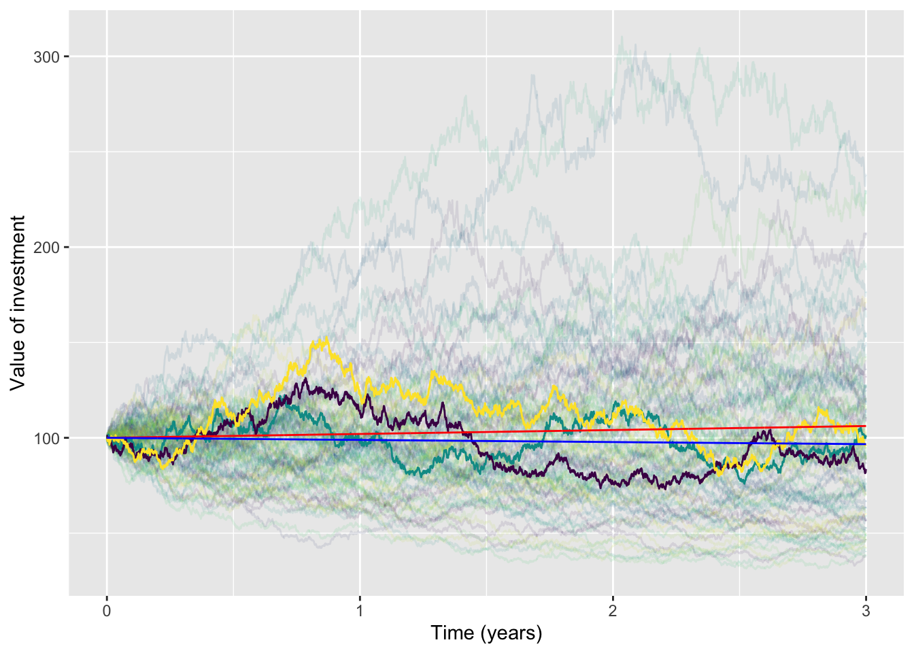

When people invest money, they expect a return. Generally, the return is measured as a percentage per year. An \(r=10\%\) annual return—that’s pretty high these days—means that at the end of the year your investment of, say, $500 will be worth $550. And remember, saying \(r=10\%\) is exactly the same thing as saying \(r=0.10\).
Banks and such do things in discrete time, e.g. crediting your savings account with interest once a month. But this is calculus, so we focus on continuous time. (And, of course, Nature does things in continuous time!)
If \(S\) is the amount of money you have invested at a return of \(r\), the evolution of \(S\) over time is given by a familiar, linear differential equation: \[\dot{S} = r S\ \ \ \implies \ \ \ S(t) = S_0 e^{r t}\]
Quick review questions:
Investments in the stock market provide two types of return. We’ll focus on the return that comes from the changing price of the stock, which can go up or down from day to day. The other kind of return is dividends, the typically quarterly payment made by the company to stock holders. In investments, dividends should not be ignored, but we aren’t interested in them here.
Now imagine that you expect, for whatever reason, the stock price to go up by 2% per year (\(r=0.02\)) on average. Of course, the price is volatile so the 2% is by no means guaranteed. We’ll imagine the volatility is 25% per year.
This situation, which includes volatility, is modeled by a modification of differential equations called “stochastic differential equations.” (“Stochastic” comes from the Greek word for “aiming”, as in aiming an arrow at a target. You won’t necessarily hit exactly.) The math is more advanced and we will not go into details. Our point here is to warn you: Now that you are expert about (ordinary) differential equations, you need to be aware that things are somewhat different in a stochastic situation.
To that end, we’re going to show you trajectories that follow the mathematics of stochastic exponential growth (with \(r=0.2\) per year and volatility \(\sigma = 0.25\) per year). On top of that, we’ll show in red the trajectory from (ordinary, non-stochastic) exponential dynamics \(\dot{S} = r S\). In blue, we’ll show the theoretical average stochastic dynamics. In all cases, we’ll set the initial condition to be \(S_0 = 100\). We’ll follow the trajectories for three years.

The eye is drawn to the trajectories leading to large returns. That’s misleading. Although there are a few trajectories that show a 3-year return above 50% (that is, to $150 or higher) in fact the majority of trajectories fall below that of a purely deterministic \(r=2\%\) annual return exponential process. The volatility causes a decrease in the median return.